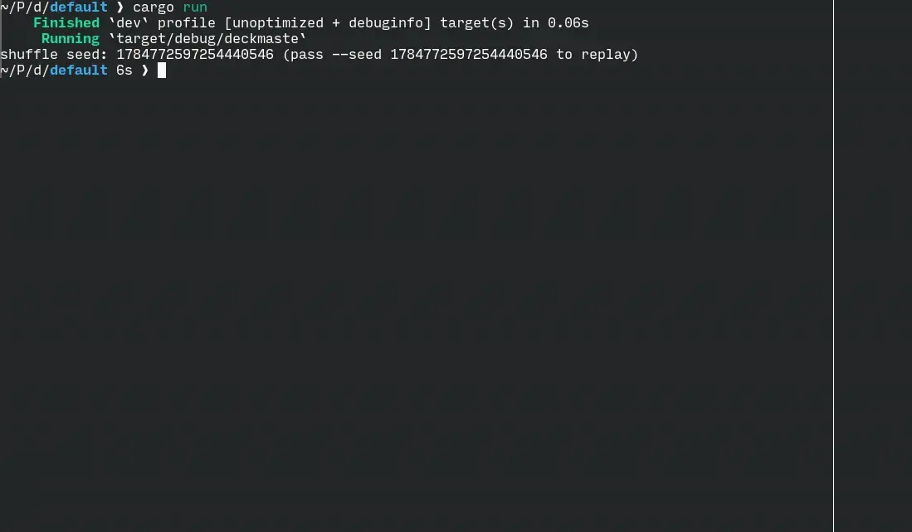

demo

cargo run — the interactive client playing the hotseat demo, Goblins vs. Elves.one grammar, two projections
Oracle text is the authoritative source input. Parsing produces an English syntax tree; recovery compiles it into a canonical typed intermediate form — the single information-complete representation from which spelling renders English back and lowering compiles the AST the engine executes.
Oracle text
⇅ parse / render
deckmaste_english
⇅ recover / spell
deckmaste_semantics ── lower ──► deckmaste_core
canonical typed IR engine AST
Recovered card descriptions are statically typed: unsupported text remains an explicit coverage gap, legitimate ambiguity remains a visible set of candidates, and ill-formed structure cannot reach runtime behavior. Rules-bearing code cites the Comprehensive Rules by number, and repository tooling validates every citation against the rules text.
mechanics reduce to shared machinery
Concretely, the recurring reductions:
- zone changes — drawing, discarding, destruction, sacrifice, and exile are one event pipeline that records the cause of each move.
- permissions & restrictions — may, must, and can't are a single deontic construct over a typed action.
- event interception — replacement and prevention effects rewrite events that would occur; prohibitions stop them at the same boundary.
- abilities — triggered, activated, and static abilities share one structure and one route to the stack or the continuous layers.
- counting — "the number of X," wherever it appears, resolves through one evaluation path.
- last-known information — departed objects are read from a snapshot carried by the event, never from stale references.
what's implemented
- the continuous-effects (layer) system, with timestamp and dependency ordering
- replacement effects and last-known information
- state-based actions
- the stack, with casting, targeting, and resolution
- triggered, activated, and static abilities
- a mana system — typed pools, color choices, persistent mana
- combat, including the keyword abilities that affect it
- turn structure, priority, tokens, emblems, and counters
- designations and history-window conditions ("died this turn", storm count)
- player choices surfaced as explicit decision points
try it
$ git clone https://github.com/msmorgan/deckmaste.rs $ cd deckmaste.rs $ cargo run
cargo run launches the interactive terminal client: a hotseat game with a live board across every zone, where you drive priority, targeting, attackers and blockers, ability activations, and mana payment from the keyboard. On first run it downloads the source snapshot and generates the demo corpus; subsequent runs reuse those local files.
How much of the card pool can complete both paths — parse → render and parse → play — is the open, card-by-card question the project exists to measure.